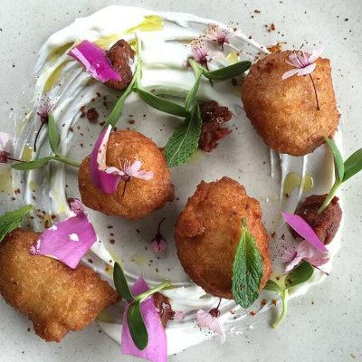

Chef Dana Tough's Acaraje

Description
These African-inspired fritters are made with dried beans that are fermented. The batter is whipped just before frying to create a delicate, fluffy interior. This distant relative of falafel is served with savory yogurt and harissa sauce, making for a dipping sauce that's both fiery and cooling. Acarajé makes for a great meatless protein on a salad but can also be enjoyed on its own as an appetizer.
Ingredients
- 4 cups water
- 1 tablespoon sea salt
- 2 cups dried white beans
- ¼ yellow onion, minced
- 2 small cloves garlic, minced
- ¼ teaspoon ground coriander
- ¼ teaspoon ground cumin
- ¼ teaspoon ground caraway seeds
- vegetable oil for frying
- 1 pinch sea salt, or more to taste
Steps
- Heat water and 1 tablespoon sea salt together in a pot over medium heat until salt is dissolved and brine is heated, about 5 minutes. Remove pot from heat and cool brine to 70 degrees F (21 degrees C).
- Mix beans, onion, garlic, coriander, cumin, and caraway seeds together in an air-tight container. Pour brine over bean mixture. Cover container tightly and let sit at room temperature until liquid is beginning to bubble from the gasses, about 24 hours.
- Drain brine from beans mixture, reserving the brine.
- Blend bean mixture in a food processor, adding just enough brine to make acaraje mixture the consistency of thick hummus. Store blended bean mixture in an air-tight container at room temperature for 24 hours.
- Preheat oven to 350 degrees F (175 degrees C). Place acaraje mixture in the bowl of a stand mixer and beat until fluffy.
- Dip a tablespoon into the hot oil to assure the acaraje mixture doesn't stick to the tablespoon. Scoop acaraje with the coated tablespoon and gently drop acaraje mixture into the hot oil; repeat process until about 6 are frying at 1 time.
- Cook acaraje in the hot oil, flipping occasionally for even cooking, until golden brown and crispy, about 4 minutes per batch. Transfer acaraje to a paper towel-lined plate; season with sea salt.